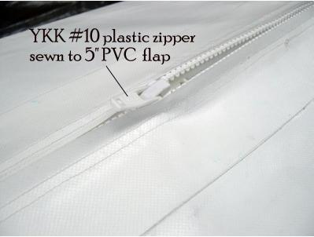
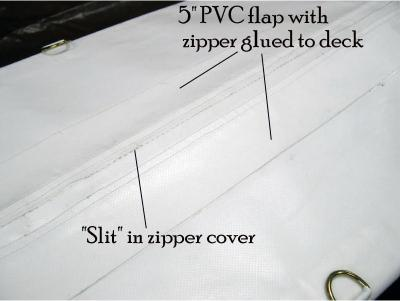

| Zipper Assembly (1 of 7) | Menu Previous Page Next Page |
|
  |
Zipper Assembly Overview
A heavy duty marine grade zipper is used to close the skin. It is sewn using polyester thread rated at V-92. Both the zipper and sewing supplies can be purchased at Seattle Fabrics or Sailrite (See Contacts Page)
1. The zipper is a plastic YKK #10. It is sewn to a 5" X 100" section of PVC. It's easier to sew the zipper to a 5" wide panel instead of directly to the deck. The panel is then glued to the deck with vinyl cement. The zipper can be attached to either the forward or aft deck.
2. The PVC / zipper is turned zipper facing down and glued to the deck. Follow the MEK / HH-66 vinyl cement procedures. After gluing, cut a slit along the entire PVC section centered on the zipper to gain access to the zipper. |